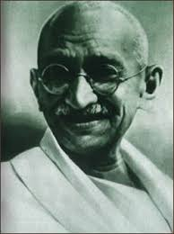

Mahatma Gandhi
Gandhi inspired India-wide boycotts of anything British and tried to encourage the country’s various communities – Hindus, Muslims Christians, Jains, Sikhs etc – to work together. It was a huge undertaking and the journey to independence was far from smooth. Gandhi’s early calls for non-violence when taking on the might of the British Empire proved difficult in practice, leading to deaths, reprisals and arrests.
As World War Two weakened Britain’s hold on the Empire, Gandhi’s aims were realised… in 1947 independence came to his beloved country. But his hopes that Hindu and Muslim communities could live together in one state were dashed when the country was split into two: India and Pakistan. The resulting violence cost Gandhi his life a year later when he was assassinated by a Hindu extremist. Yet his model for peaceful resistance and inclusive values not only freed his country – it has guided activists across the globe ever since.
© BBC | Source of information